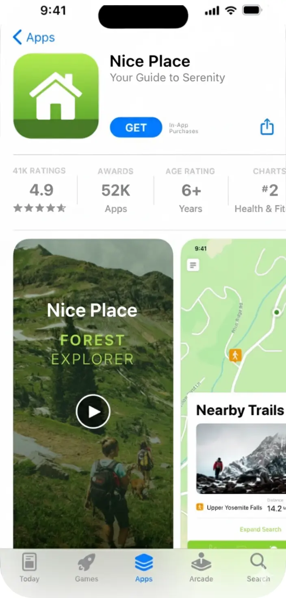

Nice Place
Huzuru keşfet.
Nefes kesen yerleri keşfet.
Mükemmel kaçışın seni bekliyor.

Huzuru keşfet.
Nefes kesen yerleri keşfet.
Mükemmel kaçışın seni bekliyor.
Filtreleri kullanarak ruh haline veya aktiviteye en uygun mekanları (parklar, kafeler, manzara noktaları) anında bul.
Beğendiğin yerleri 'Gidilecekler' veya 'Favoriler' gibi özel listelere ekleyerek kendi seyahat planını oluştur.

Tek tıkla seçtiğin yere yol tarifi al. Beğendiğin mekanları arkadaşlarınla kolayca paylaşarak ortak planlar yap.